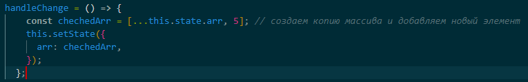

Ответ: Props представляет входные данные, которые передаются в компонент извне, а State хранит такие объекты, которые создаются в компоненте и полностью зависят от компонента. Также в отличие от props значения в state можно изменять.
Ответ:здесь попытка напрямую изменить состояние arr через функцию push(). Для изменения состояния надо использовать функцию setState().
Вот как можно написать:

Ответ: можно.
Ответ: с помощью предусмотренной в react функции setState, в которую мы записываем новое состояние компонента.
Ответ: во втором случае в консоли будет false. Потому что первоначально чекбокс у нас не отмечен. Потом меняем его состояние на "не равно отмечен". Поэтому после изменения состояния он все равно не будет отмечен.
Ответ: обычной функцией или стрелочной функцией. Разница в том, как они определяют this: в первом случае значением this будет глобальный объект и его можно менять, стрелочные функции при создании привязываются к текущему значению this. Правильнее будет использовать стрелочную функцию.
Ответ: Функциональный компонент принимает объект props, в котором содержаться значения переданные от родительского компонента. В props можно передавать любые типы, даже другие компоненты. Функциональный компонент возвращает React-элемент. Он должен быть только один, если их больше, они должны быть обернуты родителем.
Классовый компонент должен содержать метод render(), который возвращает React-элемент. Доступ к props осуществляется через this.props. Обновление компонента происходит при изменении пропсов или состояния. Чтобы получить возможность устанавливать state, нужно определить конструктор и вызвать метод super(), в конструктор и super передаются props. Само состояние изначально определяется в this.state, больше напрямую изменять state нельзя, это может привести к непредсказуемым последствиям.
Главное отличие классового компонента от функционального это возможность хранить внутренние состояния. Функциональные компоненты захватывают отрендеренные значения. А в классовых this нарушает связь пропсов с конкретной операцией рендеринга и при повторном рендеринге this.props изменится.
Функциональные компоненты более лаконичны, что приводит к более чистому и менее сложному коду. Они не включают методы жизненного цикла или унаследованные члены, которые могут потребоваться или не потребоваться для функциональности кода. Все, что можно сделать с помощью компонентов класса, можно сделать и с помощью функциональных компонентов. Единственным исключением является то, что React поддерживает специальный компонент класса под названием Error Boundaries, который нельзя дублировать как функциональный компонент.
Ответ: В функциональном компоненте нам недоступен this, поэтому мы не можем задать или считать состояние через this.state. Вместо этого мы вызываем хук useState напрямую изнутри нашего компонента. В useState мы передаем исходное состояние. Вызов useState вернёт пару значений: текущее состояние и функцию, обновляющую состояние.
Ответ: можно одновременно, можно по отдельности. В любых вариациях.
Ответ: в методе constructor().
Ответ: состоянием любых компонентов могут быть и примитивы.
Ответ: нет, для этого нужно использовать хуки.
Ответ: Вы не можете использовать хуки внутри классового компонента, но вы можете комбинировать классы и функциональные компоненты с хуками в одном дереве.
Ответ: В React предусмотрен способ устанавливать значения пропсов по умолчанию — defaultProps.
static defaultProps = {'значение пропса',};